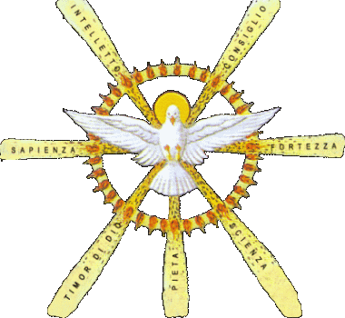

ROSARIO BIBLICO
† Nel nome del Padre e del Figlio e dello Spirito Santo. Amen.

† Vieni, Spirito Santo, manda a noi dal cielo un raggio della tua luce. Vieni, padre dei poveri, vieni, datore dei doni, vieni, luce dei cuori. Consolatore perfetto; ospite dolce dell'anima, dolcissimo sollievo. Nella fatica, riposo, nella calura, riparo, nel pianto, conforto. O luce beatissima, invadi nell'intimo il cuore dei tuoi fedeli. Senza la tua forza, nulla è nell'uomo, nulla senza colpa. Lava ciò che è sordido, bagna ciò che è arido, sana ciò che sanguina. Piega ciò che è rigido, scalda ciò che è gelido, drizza ciò che è sviato. Dona ai tuoi fedeli, che solo in te confidano, i tuoi santi doni. Dona virtù e premio, dona morte santa, dona gioia eterna. Amen.
† O Dio, vieni a salvarmi. Signore vieni presto in mio aiuto.
† Io Credo in Dio, Padre onnipotente, creatore del cielo e della terra; e in Gesù Cristo, suo unico Figlio, nostro Signore, (tutti si inchinino) il quale fu concepito di Spirito Santo, nacque da Maria Vergine, patì sotto Ponzio Pilato, fu crocifisso, morì e fu sepolto; discese agli inferi; il terzo giorno risuscitò da morte; salì al cielo, siede alla destra di Dio Padre onnipotente: di là verrà a giudicare i vivi e i morti. Credo nello Spirito Santo, la santa Chiesa cattolica, la comunione dei Santi, la remissione dei peccati, la risurrezione della carne, la vita eterna. Amen
† Padre nostro, che sei nei cieli, sia santificato il tuo nome, venga il tuo regno, sia fatta la tua volontà, come in cielo così in terra. Dacci oggi il nostro pane quotidiano, e rimetti a noi i nostri debiti come noi li rimettiamo ai nostri debitori, e non c’indurre in tentazione, ma liberaci dal male. Amen
† Ave Maria piena di grazia il Signore è con te, tu sei benedetta fra le donne e benedetto è il frutto del tuo seno, Gesù. Santa Maria, Madre di Dio prega per noi peccatori adesso e nell’ora della nostra morte, amen. (x) FEDE (x) SPERANZA (x) CARITA
† Gloria al Padre e al Figlio e allo Spirito Santo come era nel principio, e ora e sempre nei secoli dei secoli, Amen
GAUDIOSI
(LUN/SAB)
(1) L'ANNUNCIAZIONE DELL'ANGELO GABRIELE A MARIA VERGINE Frutto del mistero: L’umiltà e la preghiera “Beati quelli che ascoltano la Parola di Dio e la osservano”
- L'Angelo Gabriele fu mandato da Dio ad una Vergine, La Vergine si chiamava Maria. (Lc 1, 26-27)
- Ti saluto, o piena di grazia, il Signore è con Te. (Lc I, 28)
- Ella rimase turbata e si domandava che senso avesse un tale saluto. (Lc I, 29)
- L'Angelo le disse: "Non temere, Maria, perché hai trovato grazia presso Dio". (Lc 1, 30)
- Ecco, concepirai un Figlio, lo darai alla luce e lo chiamerai Gesù. (Lc 1, 32-33)
- Sarà grande e chiamato Figlio dell'Altissimo, e il suo regno non avrà fine. (Lc 1, 32-33)
- Allora Maria disse all'Angelo: "Come è possibile? Non conosco uomo". (Lc I, 34)
- Lo Spirito Santo scenderà su di te, su te stenderà la sua ombra la potenza dell'Altissimo. (Lc 1, 35)
- Colui che nascerà sarà dunque Santo e chiamato Figlio di Dio. (Lc 1, 35)
- Allora Maria disse: "Eccomi, sono la serva del Signore, avvenga di me quello che hai detto". (Lc 1, 38)
(2) LA VISITA DI MARIA SANTISSIMA AD ELISABETTA Frutto del Mistero: La carità e la riconciliazione “Ama il prossimo tuo come te stesso”
- In quei giorni Maria si mise in viaggioverso la montagna. Entrata nella casa di Zaccaria, salutò Elisabetta. (Lc 1, 39)
- Appena Elisabetta ebbe udito il saluto di Maria, il bambino le sussultò in grembo. Elisabetta fu piena di Spirito Santo. (Lc 1, 41)
- Esclamò a gran voce: "Benedetta tu fra le donne e benedetto il frutto del tuo grembo". (Lc 1, 42)
- Beata Colei che ha creduto nell'adempimento della parola del Signore. (Lc 1, 45)
- Allora Maria disse: “L'anima mia magnifica il Signore, perché ha guardato l'umiltà della sua serva". (Lc 1, 46-48)
- D'ora in poi tutte le generazioni mi chiameranno beata, grandi cose ha fatto in me l'onnipotente. (Lc 1, 48-49)
- Santo è il suo nome: di generazione in generazione la sua misericordia si stende su quelli che lo temono. (Lc 1, 49-50)
- Ha rovesciato i potenti dai troni, ha innalzato gli umili. (Lc 1, 52)
- Ha ricolmato di beni gli affamati, ha rimandato a mani vuote i ricchi. (Lc I, 53)
- Come aveva promesso ai nostri padri, ad Abramo e alla sua discendenza, per sempre. (Lc 1, 55)
(3) LA NASCITA DI GESÙ NELLA GROTTA DI BETLEMME Frutto del Mistero: L’abbandono al divino volere “Beati i poveri in spirito, perché di essi è il regno dei cieli”
- Mentre si trovava a Betlemme, si compirono per lei i giorni del parto. (Lc 2, 6)
- Diede alla luce il suo Figlio primogenito, lo avvolse in fasce. (Lc 2, 7)
- E lo depose in una mangiatoia, perché non c'era posto per loro nell'albergo. (Lc 2, 7)
- C'erano in quella regione alcuni pastori. Un angelo del Signore si presentò davanti a loro. (Lc 2, 8-9)
- Non temete, ecco vi annunzio una grande gioia, che sarà di tutto il popolo. (Lc 2, 10)
- Oggi è nato nella città di Davide un Salvatore, che è il Cristo Signore. (Lc 2,11)
- Gloria a Dio nel più alto dei cieli e pace in terra agli uomini che egli ama. (Lc2, 14)
- Alcuni Magi giunsero da oriente.. Entrati nella casa, videro il bambino con Maria sua madre, e prostratisi, lo adorarono. (Mt 2,1-11)
- Poi aprirono i loro scrigni e gli offrirono in dono oro, incenso e mirra. (Mt 2, 11)
- Maria, da parte sua, serbava tutte queste cose, meditandole nel suo cuore. (Lc 2, 19)
(4) LA PRESENTAZIONE DI GESÙ AL TEMPIO Frutto del Mistero: L’obbedienza. “Mio cibo è fare la volontà di colui che mi ha mandato”
- Secondo la Legge di Mosè, portarono il bambino a Gerusalemme, per offrirlo al Signore. (Lc 2, 22)
- A Gerusalemme c'era un uomo di nome Simeone, uomo giusto e timorato di Dio. (Lc. 2, 25)
- Lo Spirito Santo gli aveva preannunziato che non avrebbe visto la morte, senza prima aver veduto il Messia del Signo re. (Lc 2, 26)
- Mentre i genitori portarono il bambino Gesù per adempiere la Legge, lo prese tra le braccia e benedisse Dio. (Lc 2, 27-28)
- Ora lascia, o Signore, che il tuo servo vada in pace, secondo la tua parola. (Lc 2, 29)
- Perché i miei occhi hanno visto la tua salvezza, preparata da te davanti a tutti i popoli (Lc 2, 30)
- Luce per illuminare le genti e gloria del tuo popolo Israele. (Lc 2, 32)
- Simeone parlò a Maria: "Egli è qui per la rovina e la risurrezione di molti in Israele, segno di contraddizione, perché siano svelati i pensieri di molti cuori.( Lc 2’34-35).
- E anche a te una spada trafiggerà l'anima". (Lc 2,34- 35)
- “Fecero ritorno a Nazareth. Il bambino cresceva e si fortificava pieno di sapienza e la grazia di Dio era sopra di lui” (Lc 2,39-40).
(5) LO SMARRIMENTO E RITROVAMENTO DI GESÙ TRA I DOTTORI DEL TEMPIO Frutto del Mistero: Il desiderio di Dio “Chi ama il Padre o la madre più di me non è degno di me”
- Quando egli ebbe dodici anni, salirono a Gerusalemme, secondo l'usanza. (Lc 2,42)
- Trascorsi i giorni della festa, mentre riprendevano la via del ritorno, il fanciullo Gesù rimase a Gerusalemme senza che i genitori se ne accorgessero. (Lc 2, 43)
- Tornarono in cerca di lui a Gerusalemme. Dopo tre giorni lo trovarono nel tempio. (Lc 2, 45-46)
- Era seduto in mezzo ai dottori, mentre li ascoltava e li interrogava. (Lc 2, 46)
- E tutti quelli che l'udivano erano pieni di stupore per la sua intelligenza e le sue risposte. (Lc 2, 47)
- "Figlio, perché ci hai fatto così? Ecco, tuo padre e io, angosciati, ti cercavamo". (Lc 2, 48)
- "Perché mi cercavate? Non sapevate che io devo occuparmi delle cose del Padre mio?". (Lc 2, 49)
- Ma essi non compresero le sue parole. (Lc 2, 50)
- Partì dunque con loro e tornò a Nazaret e stava loro sottomesso. Sua madre serbava tutte queste cose nel suo cuore. (Lc 2, 51)
- E Gesù cresceva in sapienza, età e grazia, davanti a Dio e agli uomini. (Lc 2, 52)
LUMINOSI
(GIO)
(1) IL BATTESIMO DI GESU’ AL GIORDANO Frutto del Mistero: La missione “Veniva nel mondo la luce vera, quella che illumina ogni uomo”
- “Accorreva a lui (Giovanni) tutta la regione della Giudea e tutti gli abitanti di Gerusalemme. E si facevano battezzare da lui nel fiume Giordano, confessando i loro peccati” (Mc 1,5).
- “Io vi battezzo con acqua per la conversione; ma colui che viene dopo di me è più potente di me e io non sono degno neanche di portargli i sandali; egli vi battezzerà in Spirito santo e fuoco”(Mt 3,11).
- “Egli ha in mano il ventilabro, pulirà la sua aia e raccoglierà il suo grano nel granaio, ma brucerà la pula con un fuoco inestinguibile” (Mt 3,12)
- “In quel tempo Gesù dalla Galilea andò al Giordano da Giovanni per farsi battezzare da lui” (Mt 1,13)
- “Giovanni però voleva impedirglielo, dicendo: “Io ho bisogno di essere battezzato da te e tu vieni da me?”” (Mt 1,14).
- “Ma Gesù gli disse: “Lascia fare per ora, poiché conviene che così adempiamo ogni giustizia”. Allora Giovanni acconsentì” (Mt 1,15).
- “Mentre Gesù, ricevuto anche lui il battesimo, stava in preghiera, il cielo si aprì e scese su di lui lo Spirito Santo in apparenza corporea, come di colomba. Vi fu una voce dal cielo: “Tu sei il mio figlio prediletto, in te mi sono compiaciuto”” (Lc 3,21-22).
- “Chi crederà e sarà battezzato sarà salvo, ma chi non crederà sarà condannato” (Mc 16,16).
- “Gli rispose Gesù (a Nicodemo): “In verità, in verità ti dico, se uno non nasce da acqua e da Spirito, non può entrare nel regno di Dio”” (Gv 3,5).
- “E Pietro disse: “Pentitevi e ciascuno di voi si faccia battezzare nel nome di Gesù Cristo, per la remissione dei vostri peccati; dopo riceverete il dono dello Spirito Santo” (At 2,38)
(2) LE NOZZE DI CANA Frutto del Mistero: La manifestazione di Cristo “Chi vede me, vede colui che mi ha mandato”
- “Ci fu uno sposalizio a Cana di Galilea e c’era la madre di Gesù. Fu invitato alle nozze anche Gesù con i suoi discepoli” (Gv 2,1-2).
- “Nel frattempo, venuto a mancare il vino, la madre di Gesù gli disse: “Non hanno più vino” (Gv 2,3).
- “E Gesù rispose: “Che ho da fare con te, o donna? Non è ancora giunta la mia ora” (Gv 2,4).
- “La madre dice ai servi “Fate quello che vi dirà” (Gv 2,5).
- “Vi erano là sei giare per la purificazione dei Giudei, contenenti ciascuna due otre o tre barili. E Gesù disse loro: “Riempite d’acqua le giare”; e le riempirono fino all’orlo” (Gv 2,6-7).
- “Disse loro di nuovo: “Ora attingete e portatene al maestro di tavola”” (Gv 2,8).
- “E come ebbe assaggiato l’acqua diventata vino, il maestro di tavola, che non sapeva di dove venisse (ma lo sapevano i servi che avevano attinto l’acqua), chiamò lo sposo e gli disse: “Tutti servono da principio il vino buono e, quando sono un po’ brilli, quello meno buono; tu invece hai conservato fino ad ora il vino buono”” (Gv 2,9-10).
- “Così Gesù diede inizio ai suoi miracoli in Cana di Galilea, manifestò la sua gloria e i suoi discepoli credettero in lui” (Gv 2,11).
- “Il matrimonio sia rispettato da tutti e il talamo sia senza macchia I fornicatori e gli adulteri saranno giudicati da Dio” (Eb 13,4).
- “Chiunque ripudia la propria moglie e ne sposa un’altra, commette adulterio; chi sposa una donna ripudiata dal marito, commette adulterio” (Lc 16,18).
(3) L’ANNUNCIO DEL REGNO DI DIO CON L’INVITO ALLA CONVERSIONE Frutto del Mistero: La conversione “Cercate prima il Regno di Dio e la sua giustizia, e tutto il resto vi sarà dato in aggiunta”
- “In seguito egli se ne andava per le città e i villaggi, predicando e annunziando la buona novella del regno di Dio” (Lc 8,1).
- “Gesù diceva: “Il tempo è compiuto e il regno di Dio è vicino; convertitevi e credete al vangelo” (Mc 1,15).
- “E strada facendo, predicate che il regno dei cieli è vicino” (Mt 10,7).
- “Guarite gli infermi, risuscitate i morti, sanate i lebbrosi, cacciate i demoni. Gratuitamente avete ricevuto, gratuitamente date” (Mt 10,8).
- “Chi nasconde le proprie colpe non avrà successo; chi le confessa e cessa di farle troverà indulgenza” (Pt 28,13).
- “Così, vi dico, ci sarà più gioia in cielo per un peccatore convertito, che per novantanove giusti che non hanno bisogno di conversione” (Lc 15,7).
- “Mortificate dunque quella parte di voi che appartiene alla terra: fornicazione, impurità, passioni, desideri cattivi e quella avarizia insaziabile che è idolatria, cose tutte che attirano l’ira di Dio su coloro che disobbediscono” (Col 3,5-6).
- “Diceva dunque alle folle che andavano a farsi battezzare da lui: “Razza di vipere, chi vi ha insegnato a sfuggire all’ira imminente? Fate dunque opere degne della conversione e non cominciate a dire in voi stessi: Abbiamo Abramo per padre! Perché io vi dico che Dio può far nascere figli ad Abramo anche da queste pietre”” (Lc 3,7-8)
- “No, vi dico, ma se non vi convertirete, perirete tutti” (Lc 13,3).
- “Dopo esser passato sopra ai tempi dell’ignoranza, ora Dio ordina a tutti gli uomini di tutti i luoghi di ravvedersi” (At 17.30)
(4) La Trasfigurazione sul monte Tabor Frutto del Mistero: La gloria di Dio “Questi è il Figlio mio prediletto, nel quale mi sono compiaciuto”
- “Gesù prese con sé Pietro, Giacomo e Giovanni e li portò sopra un monte alto, in un luogo appartato, loro soli” (Mc 9,2).
- “Si trasfigurò davanti a loro e le sue vesti divennero splendenti, bianchissime: nessun lavandaio sulla terra potrebbe renderle così bianche” (Mc 9,2-3).
- “E apparve loro Elia con Mosè e discorrevano con Gesù” (Mc 9,4).
- “Prendendo allora la parola, Pietro disse a Gesù:”Maestro, è bello per noi stare qui. Facciamo tre tende, una per te, una per Mosè e una per Elia!”” (Mc 9,5).
- “Non sapeva infatti che cosa dire, poiché erano stati presi dallo spavento” (Mc 9,6)
- “Poi si formò una nube che li avvolse nell’ombra” (Mc 9,2-7).
- “E uscì una voce dalla nube: “Questi è il Figlio mio prediletto; ascoltatelo!”” (Mc 9,2-7).
- “E subito guardandosi attorno, non videro più nessuno se non Gesù solo con loro” (Mc 9,2-8).
- “Mentre scendevano dal monte, ordinò loro di non raccontare a nessuno ciò che avevano visto, se non dopo che il Figlio dell’uomo fosse risuscitato dai morti. Ed essi tennero per sé la cosa, domandandosi però che cosa volesse dire risuscitare dai morti” (Mc 9.9-10).
- “Egli ricevette infatti onore e gloria da Dio Padre quando dalla maestosa gloria gli fu rivolta questa voce: “Questi è il Figlio mio prediletto, nel quale mi sono compiaciuto”. Questa voce noi l’abbiamo udita scendere dal cielo mentre eravamo con lui sul santo monte” (2Pt 1,17- 18).
(5) Gesù si dona nell’Eucaristia Frutto del Mistero: L’amore di Dio per l’uomo “Dio ha tanto amato l’uomo da dare il suo Figlio unigenito”
- “Procuratevi non il cibo che perisce, ma quello che dura per la vita eterna, e che il Figlio dell’uomo vi darà. Perché su di lui il Padre, Dio, ha messo il suo sigillo” (Gv 6,27).
- “Rispose loro Gesù: “In verità, in verità vi dico: non Mosè vi ha dato il pane dal cielo, ma il Padre mio vi da il pane dal cielo, quello vero”” (Gv 6,32).
- “Questo è il pane che discende dal cielo, perché chi ne mangia non muoia” (Gv 6,50).
- “Io sono il pane vivo, disceso dal cielo. Se uno mangia di questo pane vivrà in eterno e il pane che io darò è la mia carne per la vita del mondo” (Gv 6,51).
- “Chi mangia la mia carne e beve il mio sangue dimora in me e io in lui” (Gv 6,56).
- “Come il Padre, che ha la vita, ha mandato me e io vivo per il Padre, così anche colui che mangia di me vivrà per me” (Gv 6.57).
- “Questo è il pane disceso dal cielo, non come quello che mangiarono i padri vostri e morirono. Chi mangia questo pane vivrà in eterno” (Gv 6,58)
- “Ora, mentre essi mangiavano, Gesù prese il pane e, pronunziata la benedizione, lo spezzò e lo diede ai discepoli dicendo: “Prendete e mangiate; questo è il mio corpo”” (Mt 26,26)
- “Poi prese il calice e, dopo aver reso grazie, lo diede loro, dicendo: “Bevetene tutti, perché questo è il mio sangue dell’alleanza, versato per molti, in remissione dei peccati. Io vi dico che da ora non berrò più di questo frutto della vite fino al giorno in cui lo berrò nuovo con voi nel regno del Padre mio” (Mt 27-29).
- “Voi siete corpo di Cristo e sue membra, ciascuno per la sua parte” (1Cor 12,27)
DOLOROSI
(MAR/VEN)
(1) L’AGONIA DI GESÙ NELL’ORTO DEGLI ULIVI (GETSEMANI) Frutto del Mistero: Il pentimento delle nostre colpe “Vegliate e pregate, per non cadere in tentazione”
- “Gesù andò con loro in un podere, chiamato Getsemani… e cominciò a provare tristezza e angoscia”. (Mt 26, 36)
- “Disse loro: “La mia anima è triste fino alla morte; restate qui e vegliate con me”. (Mt 26, 38)
- “Poi si allontanò da loro quasi un tiro di sasso e inginocchiatosi, pregava”. (Lc 22, 41)
- “Padre, se vuoi, allontana da me questo calice! Tuttavia non sia fatta la mia, ma la tua volontà”. (Lc 22, 42)
- “Gli apparve allora un angelo dal cielo a confortarlo”. (Lc 22, 43)
- “In preda all'angoscia, pregava più intensamente”. (Lc 22, 44)
- “E il suo sudore diventò come gocce di sangue che cadevano a terra”. (Lc 22, 44)
- “Poi tornò dai discepoli e li trovò che dormivano. E disse a Pietro: "Così non siete stati capaci di vegliare un'ora sola con me?". (Mt 26, 40)
- "Vegliate e pregate, per non cadere in tentazione". (Mt 26, 41)
- "Lo Spirito è pronto, ma la carne è debole". (Mt 26, 41)
(2) LA FLAGELLAZIONE DI GESU’ ALLA COLONNA Frutto del Mistero: La purificazione e la penitenza “Non sono venuto per chiamare i giusti ma i peccatori”
- “Misero in catene Gesù, lo condussero e lo consegnarono a Pilato. Allora Pilato prese a interrogarlo: “Sei tu il Re dei Giudei?”. (Mc 15, 1-2)
- “Rispose Gesù: "Il mio Regno non è di questo mondo. Tu lo dici; io sono re". (Gv 18, 36-37)
- "Per questo io sono nato e per questo sono venuto nel mondo: per rendere testimonianza alla verità, chiunque è dalla verità, ascolta la mia voce". (Gv 18, 37)
- “Gli disse Pilato: "Cos'è la verità. Uscì di nuovo verso i Giudei e disse loro: Io non trovo in Lui nessuna colpa". (Gv 18, 38)
- “Allora Pilato fece prendere Gesù e lo fece flagellare”. (Gv 19, 1)
- “Disprezzato e rigettato dagli uomini, uomo dei dolori che ben conosce il patire”. (Is 53, 3)
- “Maltrattato si lasciò umiliare e non aprì la sua bocca, era come un agnello condotto al macello”. (Is 53,4)
- “Egli è stato trafitto per i nostri delitti, schiacciato per le nostre iniquità”. (Is 53,5)
- “Egli si è caricato delle nostre sofferenze, si è addossato i nostri dolori”. (Is 53, 4)
- “Il castigo che ci dà salvezza si è abbattuto su di lui; per le sue piaghe noi siamo stati guariti”. (Is 53, 5)
(3) L’INCORONAZIONE DI SPINE Frutto del Mistero: L’accettazione delle umiliazioni “Chi vuole fra voi diventare grande sarà vostro servitore”
- “Allora i soldati del governatore condussero Gesù nel pretorio, spogliatolo gli misero addosso un manto scarlatto”. (Mt 27,27-28)
- “E intrecciata una corona di spine gliela pose ro sul capo, con una canna nella destra”. (Mt 27, 29)
- “Mentre gli si inginocchiavano davanti, lo schernivano: Salve re dei Giudei". Mt 27, 29)
- “E sputandogli addosso gli tolsero di mano la canna, e lo percuotevano sul capo”. (Mt 27, 30)
- “Gesù uscì portando la corona di spine e il mantello di porpora”. (Gv 19, 5)
- “Pilato disse loro: "Ecco l'uomo! Al vederlo gridarono: Crocifiggilo, crocifiggilo ". (Gv 19,14-15)
- “Pilato disse ai Giudei: Ecco il vostro re. Ma quelli gridarono: Via via, crocifiggilo!". (Gv 19, 14-15)
- “Disse loro Pilato: Metterò in croce il vostro re? Risposero i sommi sacerdoti: Non abbiamo altro re all'infuori di Cesare". (Gv 19, 15)
- “Pilato si lavò le mani davanti alla folla: Non sono responsabile, disse, di questo sangue. Vedetevela voi!". (Mt 27,24)
- “Allora lo consegnò loro perché fosse crocifisso”. (Gv 19, 16)
(4) LA SALITA DI GESU’ AL CALVARIO SOTTO IL PESANTE LEGNO DELLA CROCE Frutto del Mistero: La pazienza nella prova “Colui che non porta la sua croce con può essere mio discepolo” PN
- “Se qualcuno vuol venire dietro a me, rinneghi se stesso”. (Lc 9, 23)
- “Prenda la sua croce ogni giorno e mi segua”. (Lc 9, 23)
- “Portando la croce, si avviò verso il luogo detto in ebraico Golgota”. (Gv, 19.17)
- “Costrinsero un tale che passava, un certo Simone di Cirene, a portare la croce”. (Mc 15, 21)
- “Prendete il mio giogo sopra di voi e imparate da me”. (Mt 11,29)
- “Imparate da me che sono mite e umile di cuore e troverete ristoro per le vostre anime”. (Mt 11,29)
- “Il mio giogo è dolce e il mio carico leggero”. (Mt 11,30)
- “Lo seguiva una gran folla di popolo, di donne che si battevano il petto e facevano lamenti su di lui”. (Lc 23,27)
- “Ma Gesù, voltandosi verso le donne, disse: Figlie di Gerusalemme, non piangete su di me, ma piangete su voi stesse e sui vostri figli”. (Lc 23,28)
- “Venivano condotti con lui anche due malfattori per essere giustiziati”. (Lc 23,32)
(5) LA CROCIFISSIONE E MORTE DI GESU’ DOPO TRE ORE DI AGONIA Frutto del Mistero: Il dono di sé nell’imitazione di Cristo “Nessuno ha amore più grande di chi dà la vita per i suoi amici”
- “Quando giunsero al luogo detto Calvario, là crocifissero lui e i due malfattori, uno a destra e l'altro a sinistra”.(Lc 23,33)
- “Gesù diceva: Padre, perdonali, perché non sanno quello che fanno". (Lc 23,34)
- “Uno dei malfattori disse: Ricordati di me quando entrerai nel tuo Regno. Gli rispose Gesù: In verità ti dico, oggi sarai con me in paradiso". (Lc 23,43)
- “Stavano presso la croce di Gesù sua madre e il discepolo che egli amava”. (Gv 19, 25-26)
- “Gesù disse alla Madre: Donna, ecco tuo figlio. Poi disse al discepolo: "Ecco la tua madre". (Gv 19,26-27)
- “Gesù gridò con voce forte: "Dio mio, Dio mio, perché mi hai abbandonato?". (Mc 15,34)
- “Gesù disse: Ho sete. posero una spugna imbevuta di aceto in cima a una canna e gliela accostarono alla bocca”. (Gv 19, 28)
- “Gesù gridando a gran voce disse: "Padre, nelle tue mani consegno il mio spirito". (Lc 23,46)
- “Disse: Tutto e compiuto. E chinato il capo, spirò”. (Gv 19,30)
- “Ha dato la sua vita per noi; quindi anche noi dobbiamo dare la vita per i fratelli”. (1 Gv 3,16)
GLORIOSI
(MER/DOM)
(1) La risurrezione di Gesù dai morti Frutto del Mistero: La fede “Beati quelli che non hanno visto e hanno creduto”
- “Voi siete afflitti ma la vostra afflizione si cambierà in gioia”. (Gv 16,20)
- “Ora siete nella tristezza ma il vostro cuore si rallegrerà e nessuno potrà togliervi la vostra gioia”. (Gv 16, 22)
- “Di buon mattino si recarono alla tomba portando con sé gli aromi che avevano prepara to”. (Lc 24,1)
- “Ecco, un angelo del Signore sceso dal cielo si accostò, rotolò la pietra e si pose a sedere su di essa”. (Mt 28, 2)
- “L'angelo disse alle donne: So che cercate Gesù il crocifisso, non è qui". (Mt 28,5)
- "È risorto, come aveva detto. Venite a vedere il luogo dove era deposto". (Mt 28,6)
- “Presto, andate a dire ai suoi discepoli: "È risorto dai morti e ora vi precede in Galilea; là lo vedrete".(Mt 28,7)
- “Se confesserai con la tua bocca che Gesù è il Signore e crederai con il tuo cuore che Dio lo ha risuscitato dai morti, sarai salvo”. (Rm 10,9)
- “Io sono la risurrezione e la vita. Chi crede in me, anche se muore, vivrà”. (Gv 11,25)
- “Così anche voi, consideratevi morti al peccato ma viventi per Dio in Cristo Gesù”. (Rm 6,11)
(2) L’Ascensione di Gesù al cielo Frutto del Mistero: La speranza “Vado a prepararvi un posto; poi ritornerò e vi prenderò con me”
- “Gesù li condusse fuori, verso Betània e alzate le mani, li benedisse”. (Lc 24,50)
- “Disse loro: Mi è stato dato ogni potere, in cielo e in terra”. (Mt 28,18)
- “Andate dunque e ammaestrate tutte le nazioni”. (Mt 28, 19)
- “Battezzandole, nel nome del Padre e del Figlio e dello Spirito Santo”. (Mt 28.19)
- “Insegnando loro ad osservare tutto ciò che vi ho comandato”. (Mt 28,20)
- “Chi crederà e sarà battezzato sarà salvo, ma chi non crederà sarà condannato”. (Mc 16,16)
- “Ecco, io sono con voi tutti i giorni, fino alla fine del mondo”. (Mt 28, 20)
- “Detto questo, fu elevato in alto sotto i loro occhi e una nube lo sottrasse al loro sguardo”. (At 1,9)
- “Se dunque siete risorti con Cristo, cercate le cose di lassù, dove si trova Cristo assiso alla destra di Dio”.(Col 3,1)
- “Quando si manifesterà Cristo, la vostra vita, allora anche voi sarete manifestati con lui nella gloria”. (Col 3,4)
(3) La discesa dello Spirito Santo su Maria e gli apostoli riuniti nel cenacolo Frutto del Mistero: L’amore fraterno “Riconosceranno che siete miei discepoli, se vi amerete l’un l’altro”
- Erano assidui e concordi nella preghiera, con Maria la Madre di Gesù. (At 1, 14)
- Venne all'improvviso dal cielo un rombo come di vento che si abbatté gagliardo, e riempì tutta la casa dove si trovavano. (At 2,2)
- E apparvero loro come lingue di fuoco, che si dividevano e si posarono su ciascuno di loro. (At 2, 3)
- Ed essi furono tutti pieni di Spirito Santo e cominciarono a parlare in altre lingue come lo Spirito dava loro il potere d'esprimersi. (At 2,4)
- Si trovavano allora in Gerusalemme giudei osservanti, di ogni nazione che è sotto il cielo. (At 2,5)
- Allora Pietro, levatosi in piedi con gli altri Undici, parlò ad alta voce. (At 2, 14)
- Pentitevi e ciascuno di voi si faccia battezzare, dopo riceverete il dono dello Spirito Santo. (At 2, 38)
- Coloro che accolsero la sua parola furono battezzati e quel giorno si unirono a loro circa tremila persone.(At 2, 41)
- L’ Amore di Dio è stato riversato nei nostri cuori per mezzo dello Spirito Santo che ci è stato dato. (Rm 5,5)
- Non sapete che il vostro corpo è tempio dello Spirito Santo che è in voi e che avete da Dio, e che non appartenete a voi stessi?. (1Cor 6, 19)
(4) L'ASSUNZIONE DI MARIA SANTISSIMA AL CIELO Frutto del Mistero: La santificazione. “Beati i puri di cuore perché vedranno Dio”
- “Ha preso possesso del suo regno il Signore, il nostro Dio, l'Onnipotente”. (Ap 19,6)
- “Rallegriamoci ed esultiamo perché sono giunte le nozze dell'Agnello; la sua sposa è pronta”. (Ap 19,7)
- “Vidi anche la città santa, la nuova Gerusalemme, pronta come una sposa adorna per il suo sposo”. (Ap 21,2)
- “Tergerà ogni lacrima dai loro occhi e non ci sarà più la morte. Ecco, io faccio nuove tutte le cose.” (Ap 21,4-5).
- “Vi mostrerò la città santa, Gerusalemme, risplendente della gloria di Dio”. (Ap 21,10)
- “Il suo splendore è simile a quello di una gemma preziosissima, come pietra di diaspro cristallino”. (Ap 21,11)
- “Le nazioni cammineranno alla sua luce, porteranno a lei la gloria e l'onore delle nazioni”. (Ap 21,24-26)
- “Si aprì il santuario di Dio nel cielo, e apparve nel santuario l'Arca dell'alleanza”. (Ap 11,19)
- “Benedetta sei tu, davanti al Dio altissimo, più di tutte le donne che vivono sulla terra” (Gdt 13,18).
- “Tu sei la gloria di Gerusalemme, tu magnifico vanto d’Israele, tu splendido onore della nostra gente” (Gdt 15,9)
(5) L’Incoronazione di Maria Santissima, Regina del cielo e della terra e la gloria degli angeli e dei santi Frutto del Mistero: Un più grande amore per Maria e per suo figlio Gesù. “Benedetta tu fra le donne e benedetto il frutto del tuo seno”
- “Nel cielo apparve poi un segno grandioso, una donna vestita di sole” (Ap 12,1)
- “La luna sotto i suoi piedi, e sul suo capo una corona di dodici stelle”. (Ap 12, 1)
- “Udii una gran voce nel cielo che diceva: "Ora si è compiuta la salvezza, e il regno del nostro Dio e “la potenza del suo Cristo". (Ap 12, 10)
- “Ora figli ascoltatemi, beati quelli che seguono le mie vie”. (Pro 8,32)
- “Beato l'uomo che mi ascolta, vegliando ogni giorno alla mia porta” (Pro 8, 34)
- “Chi trova me trova la vita e ottiene favore dal Signore”. (Pro 8, 35)
- “Io amo coloro che mi amano e quelli che mi cercano mi trovano”. (Pro 8, 17)
- “Benedetto sia Dio, Padre del Signore nostro Gesù Cristo, che ci ha benedetti con ogni benedizione spirituale nei cieli, in Cristo”. (Ef 1, 3)
- “Nel nome di Gesù ogni ginocchio si pieghi, nei cieli, sulla terra e sotto terra”. (Fil 2,10)
- “E ogni lingua proclami che Gesù Cristo è il Signore, a gloria di Dio Padre”. (Fil 2, 11)
CONCLUSIONE
† Salve Regina, madre di misericordia; vita, dolcezza e speranza nostra, salve. A te ricorriamo, noi esuli figli di Eva: a te sospiriamo gementi e piangenti in questa valle di lacrime. Orsù dunque, avvocata nostra, rivolgi a noi quegli occhi tuoi misericordiosi. E mostraci dopo questo esilio Gesù, il frutto benedetto del tuo seno. O clemente, o pia, o dolce Vergine Maria.
LITANIE LAURETANE
- Signore, pietà - Signore, pietà
- Cristo, pietà - Cristo, pietà
- Signore, pietà - Signore, pietà
- Cristo, ascoltaci - Cristo, ascoltaci
- Cristo, esaudiscici - Cristo, esaudiscici
- Padre del cielo, che sei Dio, Abbi pietà di noi.
- Figlio, Redentore del mondo, che sei Dio, Abbi pietà di noi.
- Spirito Santo, che sei Dio, Abbi pietà di noi.
- Santa Trinità, unico Dio, Abbi pietà di noi.
- Santa Maria, prega per noi.
- Santa Madre di Dio, prega per noi.
- Santa Vergine delle vergini, prega per noi.
- Madre di Cristo, prega per noi.
- Madre della Chiesa, prega per noi.
- Madre della divina grazia, prega per noi.
- Madre purissima, prega per noi.
- Madre castissima, prega per noi.
- Madre sempre vergine, prega per noi.
- Madre immacolata, prega per noi.
- Madre degna d'amore, prega per noi.
- Madre ammirabile, prega per noi.
- Madre del buon consiglio, prega per noi.
- Madre del Creatore, prega per noi.
- Madre del Salvatore, prega per noi.
- Madre di misericordia, prega per noi.
- Vergine prudentissima, prega per noi.
- Vergine degna di onore, prega per noi.
- Vergine degna di lode, prega per noi.
- Vergine potente, prega per noi.
- Vergine clemente, prega per noi.
- Vergine fedele, prega per noi.
- Specchio della santità divina, prega per noi.
- Sede della Sapienza, prega per noi.
- Causa della nostra letizia, prega per noi.
- Tempio dello Spirito Santo, prega per noi.
- Tabernacolo dell'eterna gloria, prega per noi.
- Dimora tutta consacrata a Dio, prega per noi.
- Rosa mistica, prega per noi.
- Torre di Davide, prega per noi.
- Torre d'avorio, prega per noi.
- Casa d'oro, prega per noi.
- Arca dell'alleanza, prega per noi.
- Porta del cielo, prega per noi.
- Stella del mattino, prega per noi.
- Salute degli infermi, prega per noi.
- Rifugio dei peccatori, prega per noi.
- Consolatrice degli afflitti, prega per noi.
- Aiuto dei cristiani, prega per noi.
- Regina degli Angeli, prega per noi.
- Regina dei Patriarchi, prega per noi.
- Regina dei Profeti, prega per noi.
- Regina degli Apostoli, prega per noi.
- Regina dei Martiri, prega per noi.
- Regina dei veri cristiani, prega per noi.
- Regina delle Vergini, prega per noi.
- Regina di tutti i Santi, prega per noi.
- Regina concepita senza peccato originale, prega per noi.
- Regina assunta in cielo, prega per noi.
- Regina del santo Rosario, prega per noi.
- Regina della famiglia, prega per noi.
- Regina della pace, prega per noi.
- Agnello di Dio che togli i peccati del mondo, perdonaci, o Signore.
- Agnello di Dio che togli i peccati del mondo, ascoltaci, o Signore.
- Agnello di Dio che togli i peccati del mondo, abbi pietà di noi.
- Prega per noi, Santa Madre di Dio. E saremo degni delle promesse di Cristo.
† O Dio, il tuo unico Figlio ci ha procurato i beni della salvezza eterna con la sua vita, morte e risurrezione: a noi che, con il Santo Rosario della Beata Vergine Maria, abbiamo meditato questi misteri, concedi di imitare ciò che essi contengono e di raggiungere ciò che essi promettono. Per Cristo nostro Signore. Amen.
† Concedi ai tuoi fedeli, Signore Dio nostro, di godere sempre la salute del corpo e dello spirito, per la gloriosa intercessione di Maria santissima, sempre vergine, salvaci dai mali che ora ci rattristano e guidaci alla gioia senza fine. Per Cristo nostro Signore.
† A te o beato Giuseppe, stretti dalla tribolazione, ricorriamo e fiduciosi invochiamo il tuo patrocinio dopo quello della tua santissima Sposa. Deh! Per il sacro vincolo di carità che ti strinse all'Immacolata Vergine Madre di Dio e per l'amore paterno che portasti al Fanciullo Gesù, riguarda, te ne preghiamo, con occhio benigno la cara eredità che Gesù Cristo acquistò con il Suo Sangue e col tuo potere ed aiuto sovvieni ai nostri bisogni. Proteggi, o provvido custode della divina Famiglia, l'eletta prole di Gesù Cristo, allontana da noi, o Padre amatissimo, codesta peste di errori e di vizi che ammorba il mondo; ci assisti propizio dal cielo in questa lotta contro il potere delle tenebre, o nostro fortissimo protettore; e come un tempo salvasti dalla morte la minacciata vita del pargoletto Gesù, così ora difendi la santa Chiesa di Dio dalle ostili insidie e da ogni avversità; stendi ognora sopra ciascuno di noi il tuo patrocinio, affinché a tuo esempio e mercé il tuo soccorso, possiamo virtuosamente vivere, piamente morire e conseguire l'eterna beatitudine in cielo. Così sia.
† Il Signore ci benedica, ci preservi da ogni male, e ci conduca alla vita eterna. Amen.